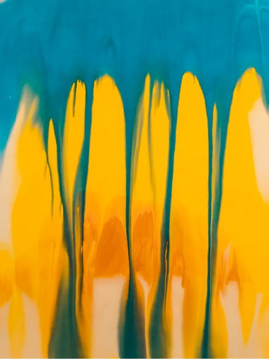

Dodomu
Mia Tozerski
Mia Tozerski est une artiste peintre ukrainienne réfugiée de la guerre. Sur cette œuvre, Dodomu ("domicile" en ukrainien), elle nous montre la tristesse du peuple ukrainien qu'elle partage, ayant elle-même dû quitter son foyer. L'œuvre évoque le drapeau liquéfié d'une Ukraine en souffrance, pleurant la mort de ses compatriotes. Ce travail chargé d'émotion est le symbole d'un événement qui marquera l'Histoire. Cette peinture à l'acrylique rayonne grâce à son fond lisse et ses mélanges de couleurs éclatantes.